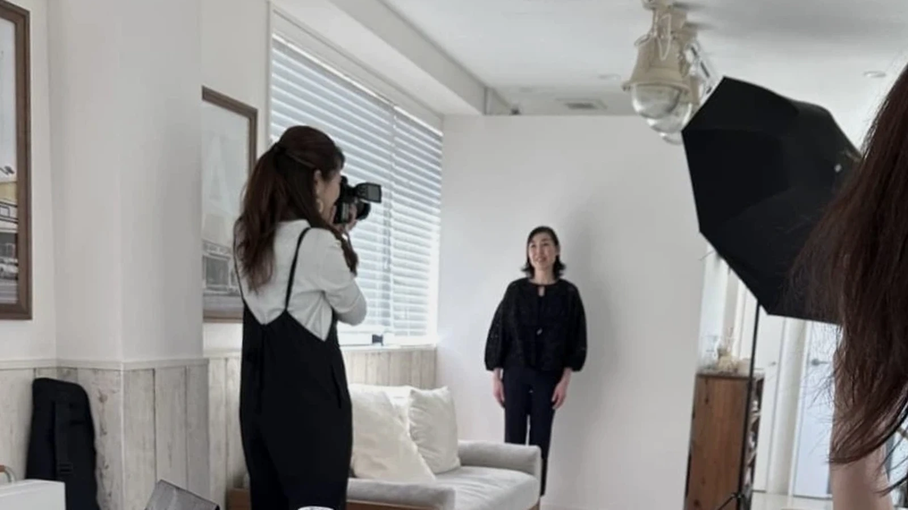
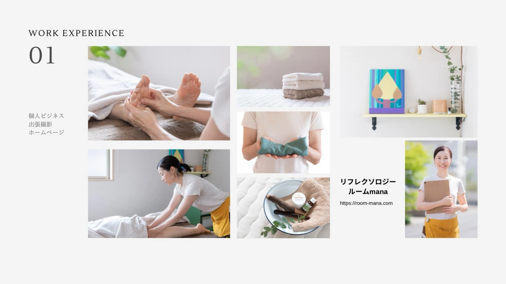
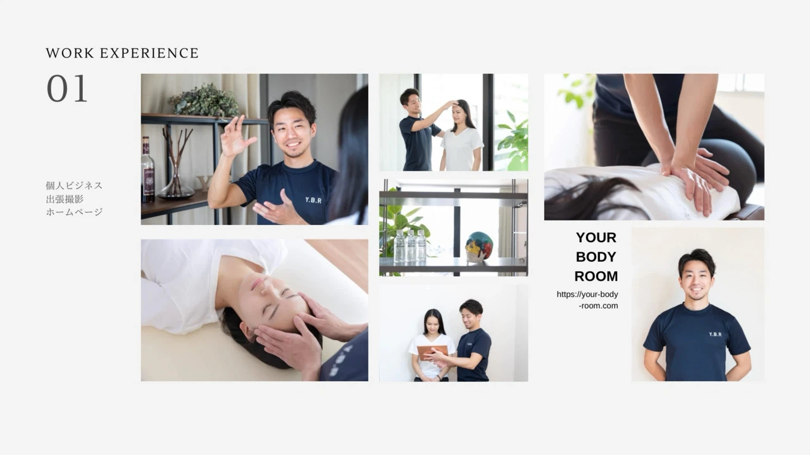
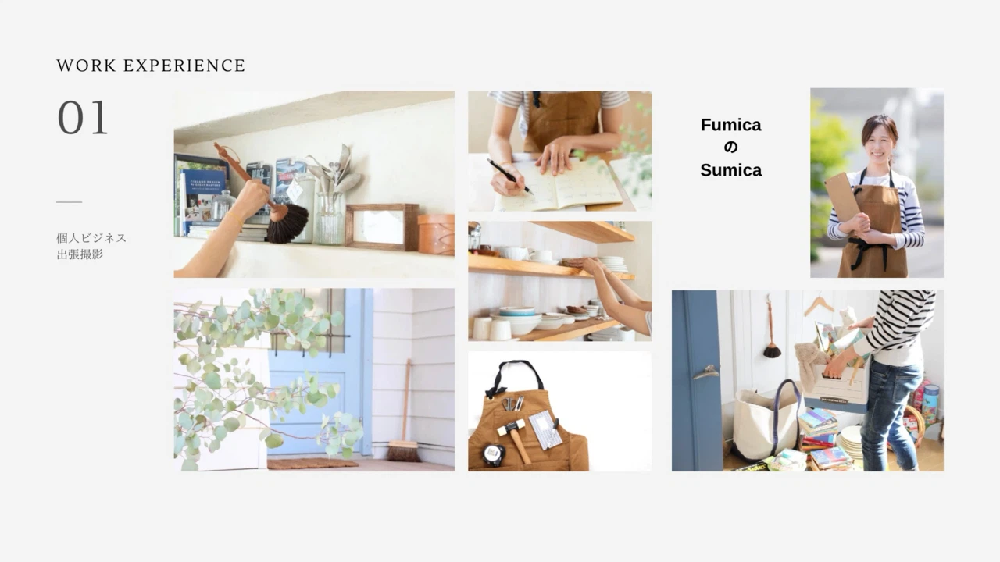
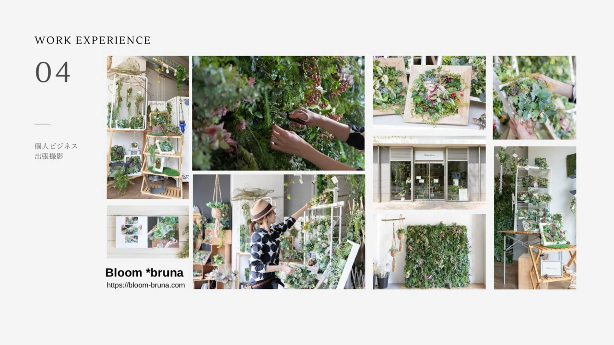
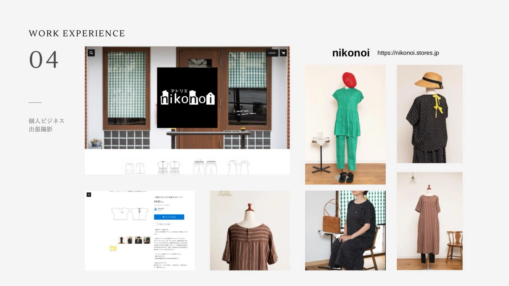
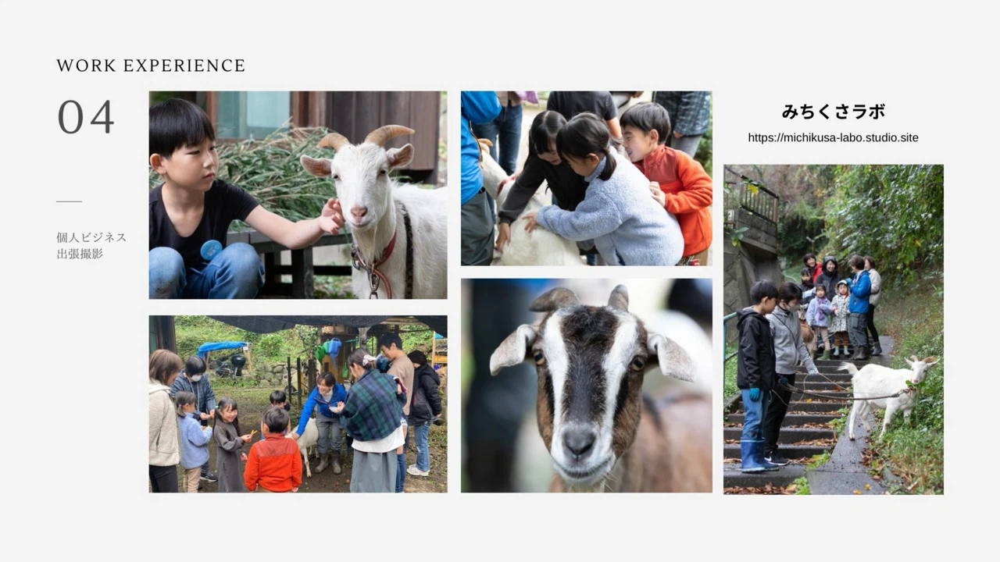
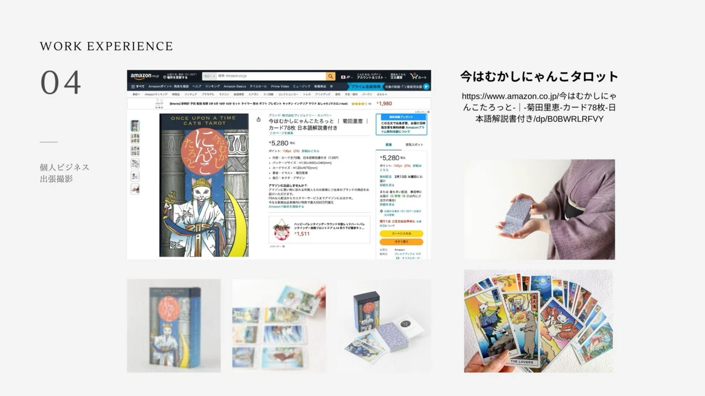

Photography by Kazumi / Polku
その人らしさが
自然に伝わる写真を
プロフィール写真や、お仕事の様子、ホームページやSNSなど、活動を伝えるための写真を撮影しています。
01
ABOUT PHOTOGRAPHY
写真を撮るということ
プロフィール写真は
ただきれいに写るためのものではなく
その人らしさや
仕事への想い
今のその人が持つ空気まで
伝わる一枚であってほしいと思っています
話しながら
歩きながら
ときには笑いながら
自然とその人らしさが表れる時間を
大切にしています
02
SELECTED WORKS
Works
人物だけでなく、仕事の手元、空間、道具、商品。活動を形づくるものを、その場の空気とともに撮影しています。







03
PROFILE PHOTOGRAPHY
プロフィール写真について
プロフィール写真は、新しい肩書きや活動を始めるとき、自分自身の背中を押してくれる一枚になることがあります。
その写真は、これから出会う人に仕事や想いを届けていく一枚でもあります。
だからこそ「きれいに撮る」だけではなく、その人らしさが伝わることを大切にしています。
「これで進んでいこう」そう思える、お守りのような一枚になれたらうれしく思っています。
PROFILE
Kazumi
プロフィール写真や、お仕事の様子、ホームページやSNSなど、活動を伝えるための写真を撮影しています。
撮影は、一緒に時間を過ごすことから始まります。話をしたり、歩いたり、笑ったり。そんな何気ない時間の中で、その人らしい表情やしぐさが現れる瞬間を大切にしています。
現在は Polku として、コーチングの提供やひとりビジネスのサポートにも携わっています。人とじっくり向き合う時間を重ねてきた経験は、写真を撮るときにも生きています。
一枚の写真が、その人のこれからをそっと支え、仕事や想いを届けるきっかけになればうれしく思います。
04
CONTACT
ご相談・お問い合わせ
現在は、ご紹介やこれまでにご縁のある方を中心に、日程や内容をご相談しながら撮影をお受けしています。
「こんな撮影はお願いできるかな」
そんなご相談も歓迎しています。